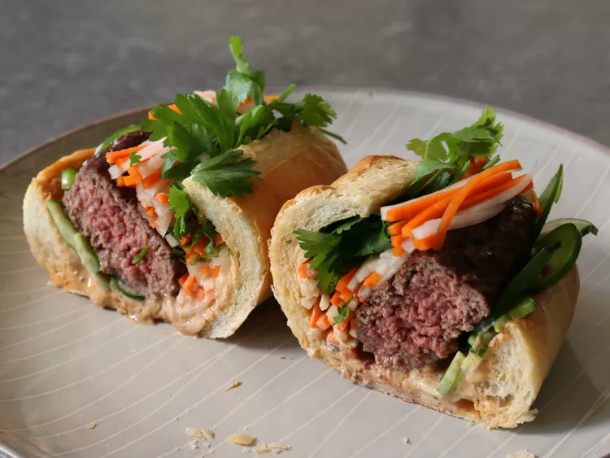

Home
Banh Mi

Description
Banh Mi is a classic Vietnamese sandwich that emerged during the French
colonial period. It combines a crusty baguette with savory fillings like
pate, cold cuts, or grilled meat, and is finished with crunchy pickled
vegetables, fresh herbs, and a zingy sauce or mayonnaise.
Ingredients
- Baguette (Vietnamese-style, airy and crisp)
- Marinated grilled pork or chicken
- Pate or liver spread (optional)
- Pickled carrots and daikon (do chua)
- Fresh cilantro and cucumber slices
- Mayonnaise or special sauce
Steps
- Prepare the marinade for the meat and grill or pan-sear it until tender.
- Lightly toast the baguette to achieve a crisp exterior.
- Spread pate (optional) and mayonnaise inside the bread.
- Layer the grilled meat, pickled veggies, cilantro, and cucumber slices.
- Close the sandwich, slice if desired, and enjoy immediately.